发现透视也有能像造型一样的对比规律，只不过叫法可能得换一换。
朝向
#绘画 #我的notion又炸了
形的概念固然重要，但是脱离了透视的形在画面中大多数是无效信息，我需要将二者结合，这就是造型的全部了吧
想太多明天大概率也是会忘记的，我需要转化成一条可以行动的指令
继续积累形，今时不同往日，现在的形是带有已经内化了透视的形
发现透视也有能像造型一样的对比规律，只不过叫法可能得换一换。
朝向
#绘画 #我的notion又炸了
形的概念固然重要，但是脱离了透视的形在画面中大多数是无效信息，我需要将二者结合，这就是造型的全部了吧
想太多明天大概率也是会忘记的，我需要转化成一条可以行动的指令
继续积累形，今时不同往日，现在的形是带有已经内化了透视的形
细微的透视我也可以察觉，局部的积累似乎不能做到快速提升造型起稿的进度，今明两天看看是否是中性姿势的问题（已否认，见上一条）
#绘画 #我的notion又炸了
这位同学先别哭，眼泪要顺着结构流.JPG #meme
这不是演习，透视已经有点跟喝水一样简单了。
每天需要结合造型去锻炼一下融合
#我的notion又炸了 #绘画
画好结构的关键是要有主观感受的方向感 #绘画 #我的notion又炸了
教育最大的遗憾，是老师只能教育你知识，却不能教育你方法论。我们的方法论，大多是在自己不断弯弯绕绕的探索中形成的
#我的notion又炸了 #思考
学习画画和不学习画画的人看画的区别，就像我们吃花生，一些人只觉得花生好吃，但不知道花生是长在地里的而不是长在树上。我必须得学会改造
#我的notion又炸了 #绘画
解释，画画是解构，两层，一层是符号化，另一层是感性化。离不开改造。而没有学习过程画画的人只会认得改造后的东西，不知道如何改造过来。
用微小的门槛来启动行动，减少疲惫，不勉强，与大脑规律共生
长时间高强度工作，会持续消耗前额叶皮层，不断堆积谷氨酸这类代谢物质，如同肌肉堆积乳酸，会直接削弱自控力与决策力。强行硬扛、堆砌计划、依赖提神物，只会加重大脑负担。
记得休息
#我的notion又炸了 #笔记
今天一大改变，是让造型的图形感与结构挂钩。我必须逼着让图形去向结构靠拢 #我的notion又炸了 #绘画 我到现在，形准已经成熟，造型也有一定把握，是可以进行下一步的探索了，再给我多些时间，去把平面的造型做纯熟，我现在需要让图形都带有结构，去立体起来
造型的疏密，不是简单的有疏密，而是有意识的分组，如果只是单纯的有疏密其实跟熵增一样了，混乱 #我的notion又炸了 #绘画
631依旧需要去在意，曲直依旧需要去在意，这些统称为造型的，还没有本能化
不行了，我要回归结构，图形化
这件事让我起稿有个定式，
#绘画 #我的notion又炸了
#绘画 #计划
由于notion炸了，只能在这里记录
。
。
大概是这样的，会有两个账号，我其实很想做情绪型，以我的认识来看可惜短时间内不可能做到。全网都在卷技法，一般技法好的流量高，也能接到大公司通告。我一定会造型出身而不是塑造出身，我需要非常强大的底力。今年都会以造型能力提升为主。训练造型，可能会套一些当前流行的角色去练，届时有画得还行的就发发，起号，这是第一个账号，大概五月中下旬，我的造型能力估计能达到一定水平。第二个账号应该会在年末甚至明年更久，因为需要积累，我的技法需要非常强大，本能化技法才能把我从意识中解放，把更多空间留给情绪。
接下面，造型练习的问题。观察与思考，也只是获得思想认知层面的规律，并不像形准一样天然就带有“正确性”在里面，它多了一层让自己创造自己的过程，需要认知与实际操作的双重积累。 #绘画 #我的notion又炸了
练习方式有区别于形准，形准的观察法是辅助未到本能的形准能力，而不是形准的规律本身。造型的观察，是直接作用于认知规律的而不是用于训练本能的。造型的训练是省察与忽略的交替进行。
形准的练习方式是显而易见的，所以投入时间去练习就很容易就能得到提升。但对于造型，我只能尝试记住形构成美感的规律，在实际画面中不断运用来使自己获得本能。目前最有用的训练方式是临摹加速写往复循环，似乎并没有更加有效的练习方式。 #绘画 #我的notion又炸了
疏密是相对的，密里面的小密也可以看成是是疏。
#绘画 #我的notion又炸了
所谓进入状态，就是能否仅仅依靠潜意识去做，意识与潜意识合二为一的心流，才是我方知是我
把技巧交给潜意识去干，让意识去控制画面中微小的变量
#我的notion又炸了 #绘画
一个反直觉的理解
创作造型练习，不是要时刻保持造型的专注，而是要尝试逐渐忽视造型的概念，慢慢去做造型。因为最后是要做到心手一致的，以此来尝试训练在潜意识中完成造型。
适用于已经理解造型，能改造，但还不能创造
这似乎是学习的最后一个阶段，完整的路径应该是这样：无知，格物穷理突破理解，大量实践熟练概念达到认知，然后逐渐忽视它，最终得到心手相应。在绘画领域，观察总结规律，速写或者临摹尝试，得出认知后并且在速写临摹中反复使用（这个过程需保持这个规律的觉知），上手后逐渐尝试慢慢不靠觉知来练习，几个循环后确认自己是不是可以在不关注它就能做到。
这个循环，需要经历失我，再回归本我，看清才不会迷失
#绘画 #我的notion又炸了
把重心聚焦到造型上，有点不计手段积累形体
#绘画
#绘画记录 塑造练习是4月10日的
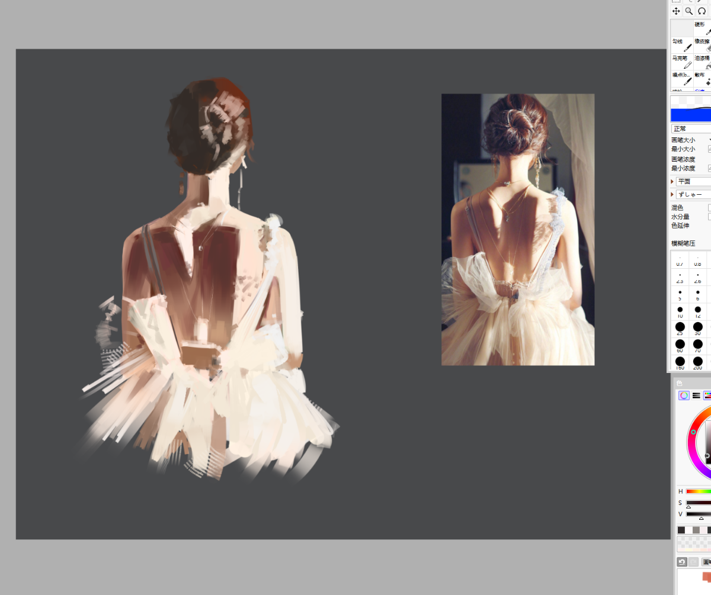
形准已经跟呼吸一样简单了，何时造型也能像呼吸一样简单（ #我的notion又炸了 #绘画
把造型逻辑刻到脑子里 #我的notion又炸了
守住自己的想法
小处验证#我的notion又炸了
青春期是人类最大的BUG# #我的notion又炸了
#绘画 疏密的更深入理解：疏的地方更疏，密的地方更密
局部的小问题，细微的地方还不是很熟练 #绘画 #我的notion又炸了
能随时静下心来做造型就是成角的时候 #我的notion又炸了 #绘画
静下心来，看问题
能确保任何时候都有造型的觉知，做局部的时候关注631，起稿的时候关注疏密方圆
画画美感的积累与创作：保证全部都能做，选择需要做
不能以简单的有或者没有去看待图形构成，将它当作一种视觉感受去做
#绘画 #我的notion又炸了
#我的notion又炸了
认知迁移，短期验证
对于造型怎么练这个问题，其实是一个认知问题。真正的造型练习不在积累，而是从认知上对图形美感的把握。图形的积累，我认为，属于真实性，在大脑里积累每一个一个物体相近图形的素材库，在做造型的时候，调用。
积累是最简单的进步
#绘画 #我的notion又炸了
其实图形构成，就是保证画面有疏有密，这是美的规律，很简单，思路之后的图形摆布仍需要积累，练习形准的就是在为这个阶段铺垫，可以看作是第二阶段，看，总结规律，尝试复刻（速写）这是在总结图形了
线的作用：朝向
形的作用：疏密，大小的节奏
#绘画 #我的notion又炸了
在画画中存在的意义应该先于存在
形体的存在首先是为了造型而生
并不是所有地方都要进行深入的造型，造型需要对画面进行取舍
疏密是相对的
对于有设定的角色（二创）来说，可以通过透视去框定造型，头发是万能的造型工具
总之不要一股脑做造型
#绘画 #我的notion又炸了
我把一件事做不好看作是心态上的迷失，
没有对图形的感受，没有对型准的感受，就一定做不好图形美感
#我的notion又炸了
#我的notion又炸了 #绘画
接下面那一条
图形的感受，疏密的感受，大小的感受，节奏的感受
疏密的对比可以试着做得更强，密的地方更密，疏的地方更疏
线条的感受
朝向
学习是感受时间上的慢和快。
开始时慢，觉得时间过得快，后面快，觉得时间慢
我现在觉得时间过得好快
#我的notion又炸了
#我的notion又炸了 #绘画
形准上来了，现在开始进入第二阶段，图形构成
去感受每个图形在画面中的感觉
这是两个阶段，只有形准的意识&能力刻到脑子里，才能进行图形的感受，因为我自己知道，每个地方该练什么，所以我不会迷失，两年前的我没有这个意识
目前的练习方式，从以形准为主转到以图形感受为主，二三次元交替进行
同样的，什么时候进入下一个阶段：塑造，就是我把造型稍微刻到脑子里的时候
不要想这么多
我出去看了一圈（指看视频平台给我推的绘画过程），发现大部分的画画过程是“病态的”，他们过分关注画面的正确性了，感受与表达几乎丧失，精致空洞，不是不遵守，而是我觉得正确性他并不是最重要，可是大部分的过程给我一种感觉，就是以正确为优先。这件事自己清楚就好了，我也可以狠狠学别人怎么处理正确的图形，反哺到我的表达当中去。这段文字也回应了，我看别人的过程，我是在看什么，学什么。
也并不是看不起别人画的画，只是理念不同，我相信技法的纯熟能给自己带来表达的底气，我现在自己的技法达不到自己要求的矛盾，但我喜欢情绪感强烈的画，即便它的技法很笨拙。
我应该要把注意力放在简易的造型，而非繁杂的塑造上
#绘画 #我的notion又炸了
边缘不仅能做阴影，还能做细节
4/6 后日谈：这个理解有些片面
#我的notion又炸了 #绘画
#我的notion又炸了
再谈造型
造型只能靠练习逐步提升已成事实。
永远铭记：没有人会对你负责
以此原则行事，活得比较舒服
#我的notion又炸了
梗收集（
#meme
我网贷了三万去上曼奇立德，说来也巧，在曼奇立德的 时候我同桌给我说又另外一款软件还能借钱，我本来没 想着继续借，我也不想陷进去，但是后来又听说向日葵 之后有基础，基础之后又有研修班，甚至还有DLC，我 想着借都借了，只要每天在咸鱼多卖几张描的图就好 了，结果没过多久就被举报了，彻底没了收入来源，征 信也黑了，现在学画画，没有收入来源，连利息都还不上了，我也没想到学画画和贷款都越陷越深了，现在我 也不知道该怎么办了
表
靠着网上零零碎碎的教程把一些东西摸索到一线的水准，难道我是天才（讲给别人的话
里
我们东亚的教育，似乎使社会只是在乎结果方面，忽略了造就结果的那个过程。这是一个陷阱，忽略过程的不会结果。只要在挑水的时候想着挑水，砍柴的时候想着砍柴，专注于符号本身，本质就自然会浮现。
我曾深深扎入大量的陷阱，苦苦挣扎而不得解，无数个失眠的夜晚，那些简单的道理与规律，是大量试错后，所来之不易的。
“习惯失之交臂，习惯错失良机，习惯喂养妥协培育耐心。
尽将杯中残余，共往日泪水余烬，泼洒入此刻晨曦。”
#我的notion又炸了
静下来做造型#我的notion又炸了
忽视那些正确性，emmm大白话就是不用担心画得对不对，只有画得好不好
我现在觉得：想象力是技法能力上来之后的必然结果
因为多了能表达的手段
#我的notion又炸了
光影也是，不要瞎加，以造型为主
塑造就可以放开一点，造型不行就乖乖加塑造（）
#我的notion又炸了
下次画到不想画也去画石膏算了
有个实物在那里，用笔也是放心的
#我的notion又炸了
做造型的时候，静下来，把形做实
#我的notion又炸了 目前舒适圈：先做好一种，再慢慢添加其他，一种还是做不到，继续简化
创作做造型避免翻车：扬长避短，以形为先
可以试着加入主观色了，
别忘了这个可以抄
#我的notion又炸了
Let it be
#我的notion又炸了
#日记 #我的notion又炸了
失眠多日
其一：逐渐加入曲直的节奏
#我的notion又炸了 #绘画
我仍在挖掘，嘴里梦想的含义。
当一切明朗，剩下的就是行动
我在迷雾与丛林间行进，
#我的notion又炸了
造型的时候形硬一点的线概括比较好，画面看起来更实 #我的notion又炸了 #绘画
仍需要形的感觉，分割出好看的形体，严格执行631
#我的notion又炸了
之前居然没有记录过？
做造型的时候就要想着造型，而不是透视结构什么的。这里面既有挑水的时候想着挑水，砍柴的时候想着砍柴，也有看山不是山的意味。这也有一层我为什么这么在乎形准的原因。
做塑造的时候同理。
#绘画
知道的事情越少，慢慢的，我会心安。
好焦虑，天天失眠。
为什么，要往坏处想，明明可能没这么严重。
可是生活的经验告诉我，某些事的发生就是坏的，我们很容易自顾自的去贴标签。
事物的本身不会困扰，困扰人的，是对事物的看法。
或许长久以来的，我们的社会习惯了看结果，忽略那些隐匿在背后的过程。
我们拥有的只有当下，所以不要让宝贵的时间，被当下的焦虑占满，努力活得有价值。
不要过于陷入不必要的信息中（别人的看法，别人的评价，别人的行为。。。），只要控制我能控制的事情就好了。
那些给我自责，失落，反思的，是已发生的失败，他们会带给你真正的契机，那是来自过去的事，而不是未发生的未来，也不必为了别人，回应别人；
很讽刺，我的信息必须会来自外界，并且他们正在构造我对这个世界的认知。
#我的notion又炸了
乱花迷人眼，牵扯太多，容易让人迷失
#我的notion又炸了
一次失败可能是由多个问题复合的，如果当事人没有相关的认知，或缺乏一一排查的耐心，很容易会迷失其中，郁郁不得解。即便侥幸看出，也难逃下一次的失败。
还望牢记的，解决问题需要简化。不妨静下心来，逐一排查。
世界太庸俗
#杂谈
轻总结：
同心圆
先做形，再考虑体积
是发旋
#我的notion又炸了
你会见到不同的人，正在做不同的事，为不同的念想而努力着，不久之后你们将走在不同的路上。
我们用着年轻的决定，选择不同，在单纯与深思的摆动，投入我们宝贵的时间。
#杂谈
画的立体，来自于它的阴影，人也是如此。
克劳德·莫奈
#名言
#我的notion又炸了
0326
仍需积累形体，总结形的规律
形准仍需提升
塑造没有做
生命的脆弱，生命的勇气。
#思考 #悖论
各凭本事
#绷
目前对于配色的理解
#我的notion又炸了
尽力用文字描述：一，颜色有三值，色相，饱和度，明暗。延伸意为这里三个必须要任意一个之间要有联系，要不色相上是临近色，要不纯度上有高低，要不明暗是有高低，进而达到一种延伸的感觉，色彩好看的本质就是一超多强，一个联系，和而不同。举例：一个纯度不同的明度相近的临近色。这种技巧为了画面存在一点一致性的逻辑，按这种技巧做配色能使画面看起来和谐。一点五，明度的对比是直觉中最明显的。二，网上会有一种套路，就是叫安全色系，其实就是这个逻辑。三，比较可惜的是，一般在做画面构成的时候会用上对比，而会牵扯到色彩，所以一般画面中只会出现一到两种具备两项的色彩对比，色彩统一变得尤为重要，因为大部分色彩必须给需要给做对比的部分让路。四，这套规律不仅仅用在固有色上，还用在任何色彩的处理上。零，这是一种技巧，是美的逻辑不是表达。也就是说，思路是多种多样的。我这里可以捋清楚一些思路，就是之前有个很火的配色方法叫明暗九调差不多是这个，第一种是看对比最强的地方走什么对比，是强对比还是弱对比，这里只有两种分叉，因为色相对比很难做轻重，所以一是明度，二是明度加灰纯。第二种就是弱对比了，一是走临近色，二是走同明度延伸（就是对比色150°要在纯灰上有区别）。不过固有色图层做配色一步到位几乎是不可能的，所以固有色之后还要进行一些处理：一是做渐变，二是继续做延伸，三是呼应，实在不行，或者遇到那种重环境色，直接正片叠底加叠加调。
知识的大一统有时并不是什么好事。虽然能联络大部分内容，但是理解的难度远不及具体操作简单。
我之前怎么理解的呢，因为我是先学去做明暗，所以是直接套黑白关系去做配色，理解为统一色调，层次，对比。这里相当于大一统了，把配色的规律总结出来。
久在江边站，必有望海心。
#绷
隐居者应是比任何人都要积极入市
#杂谈
我被情绪裹挟
我始终在织一个茧
都是借口，自我欺骗，固步自封
#我的notion又炸了
道你悟到了以后再去看文字才能完全看懂，很悖论
圣人文字，只当做方向，道理需在实践中得到。
#我的notion又炸了 #悖论
每个人总要经历一定才会产生认知
但是我们在交流的时候默认对方是清醒的
我会凭直觉去判断
#我的notion又炸了
当你悟到一个规律，结果发现大家以前都是这样做（
我去怎么不早说
#我的notion又炸了
#我的notion又炸了
目前对于塑造的理解
边缘效果
虚实节奏
小节奏（织色）
藏色
塑造的目的是补充造型里必要的真实感
#我的notion又炸了
清楚自己在练什么
画的时候在想什么，不是我在想什么，是意识在想什么
因为练习，多数是精一的，在一项熟练度上来之后，或许才好加入第二项
做造型的时候，意识是交织的，交融的
但不代表造型是混乱的，造型的时候想造型，上色的时候想上色
直至萤火虫不再出现的夜晚#意象
心学依赖使用者纯粹性
#思考
每个人都有每个人熟悉的领域，平时还是使用普世性的语言去交流，一下进入深度讨论，大多数会导致一方敷衍。因为认知有差异，传递有失真，不说理解，记住就很难。
深度的沟通需要严肃的语言，上纲上线你当成玩笑，那没有意义。交流没有意义。
#思考
穷生奸计，富养良心#摘抄
需要的的验证认识的，不是具体的步骤
需要耐心，需要在你思绪清醒下进行
需要参照，需要最小的过程不是结果
不是大体，不是
我的下一次突破在塑造
可能很可笑的一件事：这个步骤的突破点要在下一个步骤中获得
练习的意义在于找到积累的感觉
大处着眼，小处着手
#思考
信息过载比信息缺乏更加毁人#笔记
理论是“脱水”的，而实践是“泡发”它的过程。#笔记
#我的notion又炸了
今天遇到的困境：在尝试创作的时候陷入技术焦虑，解决：忽视它，把注意力放在造型上就好了
举世誉之不加劝，举世非之不加沮。
长期依靠外部嘉奖来维持行动力，我们最终会丢失丢失内驱力，进而失去生活的意义。
为圣人著书，也只能描绘圣人轮廓。若是两年前我读这段话恐怕只理解为 圣人不追求功名世俗。以术求道，真理需在行时亲证，而无法通过文字直接传达，既然圣人的境界无法通过文字直接传达，那我们如何在行动之前理解原文字所真正传达的意思？
#笔记
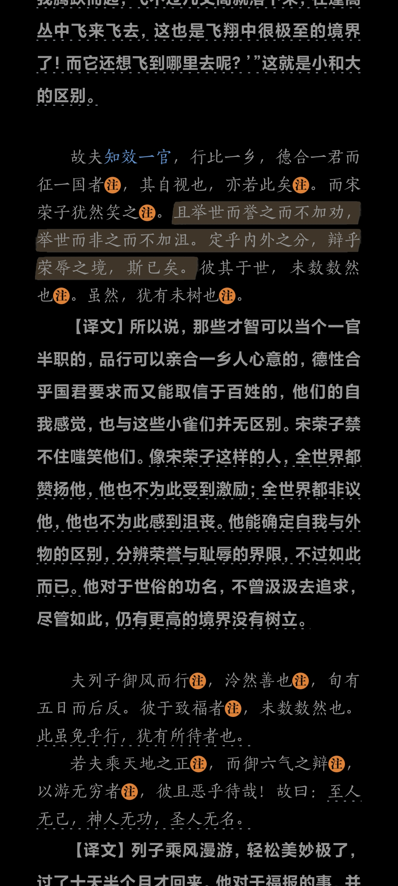
老百姓的日常是杀时间，而不是用时间；是消费，而不是生产。
没事的时候，大人打开手机，有的刷短视频，有的玩小游戏，有的看网文，有的看直播打赏；小孩打开手机，有的看动漫追剧，有的玩网游。大家都各得其所，玩得不亦乐乎。
如果不是生活所迫或者欲望驱使，没有人会主动想要学习进步。打发打发时间，凑活活着就行了，还要什么自行车啊。
面对这样的基本盘，引入高大上的科学方法论，强调专业性，能吸引到用户吗？又能吸引到多少呢？
自然流地生活，接受周围文化影响，接受生理激素控制，接受本能欲望的影响，才是主流人群的常态。
#摘抄
#回应
对于新人来说是错误的做法，初学者陷入困境往往是因为错误的训练方式，这与他们对其领域的认识还不够有关系，一味跳入挑战只会适得其反
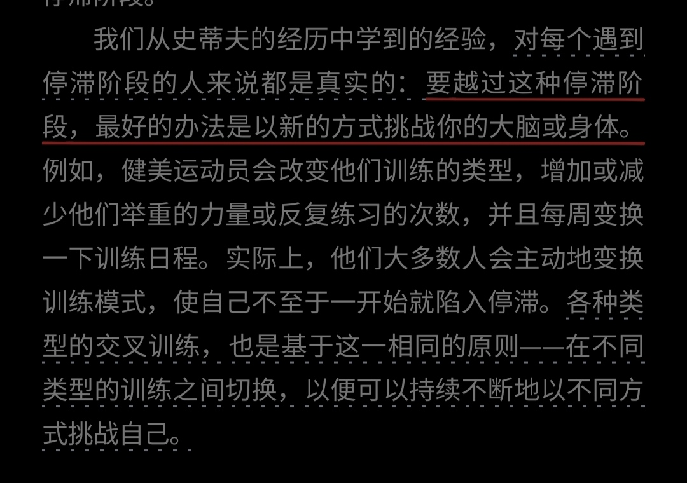
丹·苏利文和本杰明·哈迪认为，增长10倍比2倍
更容易：2倍增长源于线性堆叠，易让人陷入勤奋
的陷阱；而10倍增长则是重塑身份的认知革命。
其深层逻辑在于“战略减法”：当目标设定为10倍
时，渐进式改良失效，你不得不剔除80%的平庸
干扰，将资源极度聚焦于产生指数效应的“独特
能力”。
#摘抄
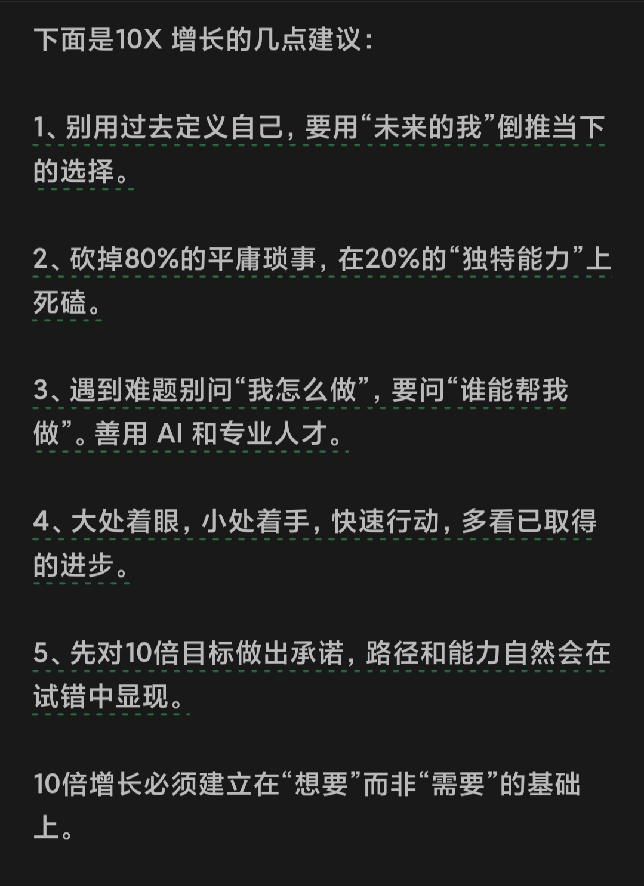
比起出图，我现在更想找到一种练习方式，以满足我需要大量积累形体的需求。其实换个思路，出图也可以是画的比较好的习作。
#我的notion又炸了
退路与借口一并 #杂谈
我要成为谁？
我现在的样子，再往前一点点。#杂谈
见到了神之后，人也便开始丰富自己的形态#摘抄
在摄影诞生以前，绘画的神明，企图无限接近现实的美，摄影诞生之后，现实的美学被解构清楚，绘画也开始重新解构自己。
创造的本质是把活过的东西再活一遍，充实的生活，良好的环境，宁静的心境，创造力的源头。 #摘抄
无用的闲谈，失眠的夜晚，随意的阅读，顿悟的瞬间，逝去的故人与故事，聚合成你，创造的种子。
矛盾，是鲜活的灵魂在挣扎#杂谈
失活的灵魂，只是逻辑或思想的载体
圣贤把天理著成书，如同给人画像，只是展示给人一个基本的轮廓，使人们依据轮廓而进一步探求真谛；至于人的精神风貌、言谈举止，本来就是不能完全通过文字来传达的。而后世的著述，是又将圣人所画的模仿抄写，再妄自加以分析增减，以炫耀自己的文才技艺，这就离圣人所要传达的精神越来越远了。 #摘抄
#摘抄
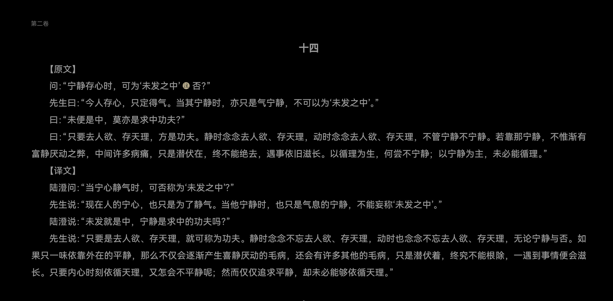
因无所住，而生其心。
金刚经
#摘抄
#摘抄
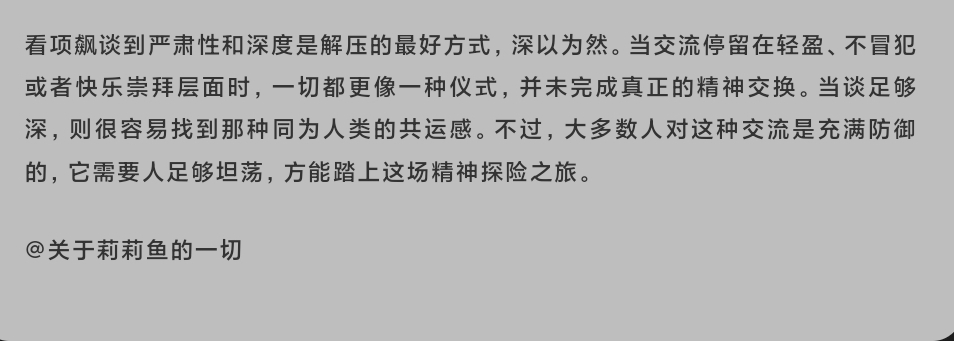
一条通解世间万物的捷径：自己骗自己
#杂谈
“臣以神遇而不以目视，官知止而神欲行。”
《庖丁解牛》#摘抄
我们都是以正常的思维在管理预期。但当预期与现实出现偏差的时候，我们该怎么做呢。道路不至于一条，然而横枪给出的答案往往是最荒唐的一幕。
#杂谈
在酒神的魅力下，不仅人与人的结合得到了重申，而且已经变得疏远、敌对或被征服的大自然，再次庆祝她与她失去的儿女——人类——的和解……现在，奴隶也成了自由人；横亘在人与人之间的隔膜，无论它们是出于必要、偶然或传统礼法，现在都被打破了。现在，有了普世和谐的福音，每个人都觉得自己不仅与邻人和解、交融、团结，而且与他们成为一体，仿佛摩耶的面纱被撕碎了，现在衣衫褴褛、战战兢兢地面对着神秘莫测的远古的统一。
#摘抄
第一人称，“我”，自然而然地作为一种工具出现，它能够锻造记忆，捕捉和展现我们生活中难以察觉的东西。
#摘抄
是否并不仅限于「xxx」这一需求，而是还暗藏着
#摘抄
想要无痛从事创作，就好比希望以健康的方式服用兴奋剂。一种现代医学无法根治、就连医生也会温柔地建议「要学会和它共存」的「慢性病」更为现实。
#摘抄
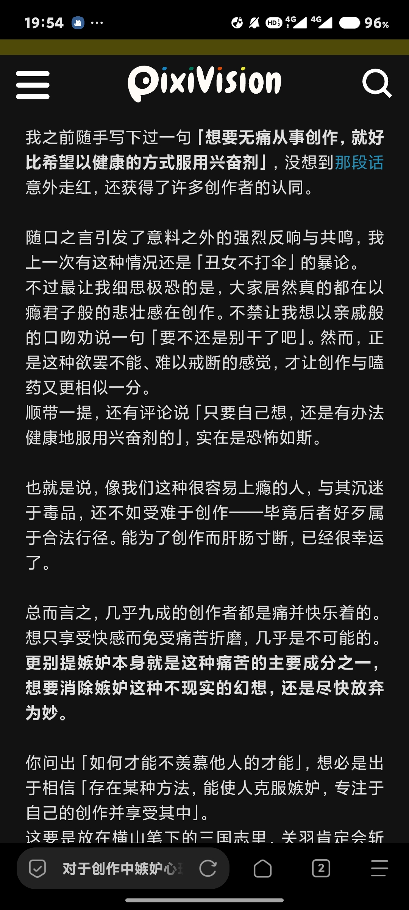
灵感通常来源于日常观察积累的水到渠成#摘抄
辩论就是这样一种东西，你无法反驳我的观点，就像你解题一样，你不知道解题的方法。或者说，我提出的假设，是超于你的经验的。
世界种种存在矛盾性，没有唯一解，是因为大多数的客观是超验的。或者说，在经验的世界里，往往是矛盾的。
#杂谈
#摘抄
动词带有方向性#摘抄
每个角色，都像是久违的自己。
#摘抄
文字的记忆未必真实，语言在解释本意到时候往往会失真，诗歌，传记，各自以独特的问题发挥不同的作用。亲历一事放才是最饱含真实的，所以务必珍惜好每一次亲历的机会。但，并不是每个人都有机会，书籍依旧是最付出成本最低廉的 #杂谈
哪些事是有意义的，哪些事是情绪控制的#杂谈
声音传达情感，安静产生情感#杂谈
我接受别人的声音，我传达别人的声音。
我接纳我的安静，我传达我的声音。
天气正好，流感初愈，思考一下后续的练习方式。
潜意识告诉我的「现在有一种练习方式：格物致知」，就是在有限的方格里进行小范围的针对性练习。估计是之前看到一些形衍九章的帖子，大脑在我没有经过理性思考的情况下，擅自提出了这种方法。
#杂谈
大概有时也会感叹，同样的事情，为什么我就做不到呢？#摘抄 #杂谈
#摘抄
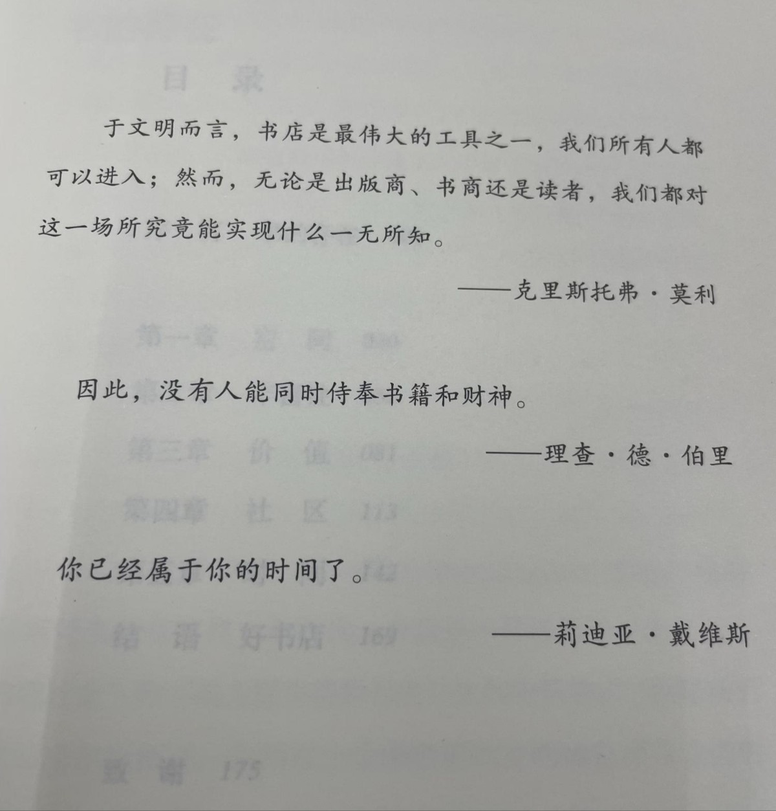
这个世界，是不完美之美。眼前呈现的，是一片的苍白无力。如果说摄影，写生还在试图捕捉这个世界的美；那么绘画，音乐，写作就是在反抗，创造一个新世界。
#杂谈
人生有很多种可能性，你没有必要选择最悲催的那一条。
但有的人出生就在一条破洞的船上，人生就是一直拼命将水往外倒，破洞的船摇摇晃晃，不知驶向何处。风平浪静的大海中，独自挣扎，看见别人见风使舵，也与自己毫无关系，前途无法想象的恶劣，也在等着。西西弗斯，是哪些瞬间支撑你坚持下去。于是我们不甘，因为人生的意义本就是由人来赋予的，死亡给予了生命第一层的意义，就由我们来赋予它更多。
此刻晴空万里，我站在阳光下，观察着这一切。。。
#杂谈
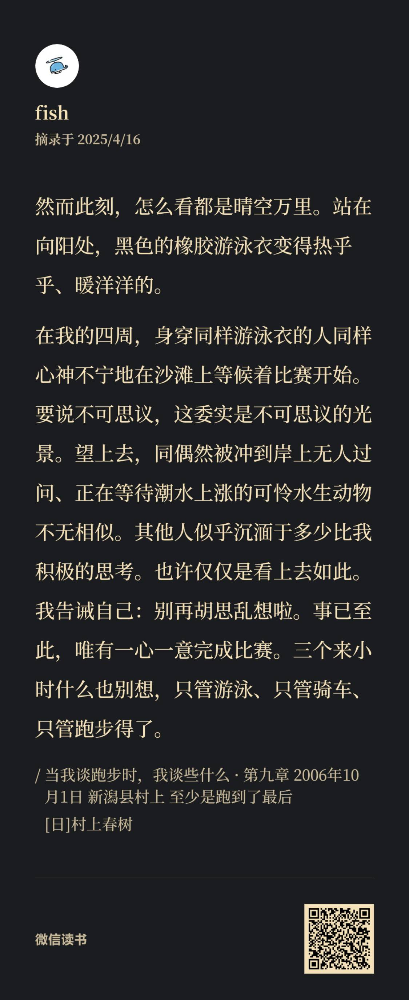
看到小朋友用不合理的方式解决问题，应该告诉他/她正确的方法吗？
换句话说：应不应该把成年人的理性强加于小朋友之上。
#杂谈
马良的神笔现在你手中，请问：你要拿它画什么？
技术不再是门槛，同时也扯掉了借口和挡箭牌，必须要直面那个问题：
你的灵魂，有趣吗？
#摘抄
美国作家威廉·德雷塞维奇（William Deresiewicz）在其著作《优秀的绵羊》（Excellent Sheep）中提到了一种奇怪的心理疾病，“斯坦福狂鸭症”（Stanford Duck Syndrome）。“想象一下，一只悠闲的鸭子在湖面上逍遥自在地漂过，水面上的平静掩盖了水面下鸭掌的疯狂拨动。
我甚至觉得我活到目前的人生，都复现这种“狂鸭症”不知道是不是一种悲剧。
@小野酱大漂亮.AI
#摘抄
Meta 有个工程师发现了广告系统中一个数组拷贝问题，只加了一个 & 符号（把值拷贝改为引用传递），就节省了 15,000 台服务器。
来源：https://engineering.fb.com/2025/01/21/production-engineering/strobelight-a-profiling-service-built-on-open-source-technology/
#摘抄 #
FR-For real 用于强调某事是真实 问句语调表示真假的？？
POV - Point Of View（观点，视角）社交媒体上发图时表示特定的观点或场景的配图文字
PLS-please好吗，请
OfC-Of course 当然
BRB - Be Right Back（马上回来）
BTW - By The Way（顺便说一下）
COZ - Because（因为）
JK - Just Kidding（只是开玩笑）
JW - Just Wondering（只是好奇想问一下）
L8R - Later（稍后）
LOL - Laugh Out Loud（大笑）
LMAO - Laugh My Ass Off（笑得我屁股都掉了，形容笑得很厉害）
LTNS - Long Time No See（好久不见）
M2M - Man to Man（男人对男人，开诚布公地）
B4 - Before（在…… 之前）
CU - See You（再见）
NVM - Never Mind（没关系，别在意，算了）
N/A - Not Applicable（不适用）
DM - Direct Message（私信）
FB - Facebook（脸书）
WTH - What The Hell（表示惊讶、不满、困惑等，语气稍弱于 WTF）
FTW - For The Win（为了胜利；太棒了）
FYI - For Your Information（供你参考）
AFK=away from keyboard离开键盘/挂机，
Y=why为什么，
WB= welcome back欢迎回来
GG - Good Game（常用于游戏结束时，表示打得好）
GM - Good Morning（早上好）
GN - Good Night（晚安）
G2G - Got To Go（得走了）
GYK - Get Your Kicks（玩得开心）
IMO - In My Opinion（在我看来）
IOW - In Other Words（换句话说）
IRL - In Real Life（在现实生活中）
NBD - No Big Deal（没什么大不了的）
NP - No Problem（没问题）
NSFW - Not Safe For Work（不适合在工作场合 [看 / 听等]）
OIC - Oh, I See（哦，我明白了）
OTW - On The Way（在路上）
ASAP - As Soon As Possible（尽快）
TBH - To Be Honest（说实话）
TMI - Too Much Information（信息量太大，多用来表示对方说的话过于私密或没必要知道）
TTYL - Talk To You Later（稍后再聊）
#笔记 #英语 #缩写
情绪是意识与无意识的中介物。
意识可以通过情绪照见无意识。#摘抄
年龄让神经脆弱不可避免，灵感的源泉也在此枯竭。
保持健康的精神，勉强让衰弱延后。
肉体的健康延后精神的衰老。为了精神，爱护好自己。
#笔记
adhered to =
坚持
#英语
“抽象之梯”不是什么新奇说法，这是语言学家塞缪尔·早川提出的一个概念，常常出现在各种写作教材中。
抽象之梯的底部是最具体的概念，顶端是最抽象的概念。我们使用的每一个概念都处于抽象之梯之上。好的写作教材会告诉你，要想办法让自己的语言停留在上或下的其中一端，避免悬于中间。也就是说，要么使用最抽象、最具概括力的表达，要么描述最具体、最精微的经验事件。
这对我们的概念抽象能力和经验觉察能力提出了非常高的要求，多数时候，我们只能悬在梯子中间，说着一些两头不沾的话。
《关于说话的一切》
「两头不沾，只悬在中间」在我们身边以多种形式存在。我们不可能同时处于激昂和平静的状态，对于我来说，平静能帮助我思考得深入，而激昂能帮助我思考得更广泛。但我常常悬于中间，既不激昂又不平静，既不深入又不广泛。
达到专注与放松，我花半个小时时间专注在学习数理上，再花半个小时休闲在电子游戏当中。而处于中间，学习时想着休闲，休闲时想着学习，感叹别人为什么效率这么高。
批判：拓扑学家乌拉姆在研究核反应堆时，通过绘制《洛丽塔》人物关系图获得灵感，这种认知杂交最终催生了蒙特卡洛模拟法。
悬置状态下，既非理性思辨亦非感性，恰是意识原初的澄明之地。
承认优秀之人能做到在二者间不断切换，而大多数人在这中间已然迷失。悬置状态并不普遍适用，它更像是二者博弈的平衡之处，越不向一边倾斜，就越趋于。
#笔记 #摘抄
真正关键的并非选择某个层级，而是掌握 模式切换的时机。这需要培养「认知觉知」——就像冲浪者感知浪涌的微妙变化
#Deepseek #摘抄
我们一般只是用参考系来判断物体是否运动，而忽视了参考系也可能会有在变化。#形象的类比
你要说从头开始种树，没多少人愿意去整地，挖渠，修枝，治虫。但是等到树长大结果时就有人来摘果树了。#摘抄
就算你不加入他们的行列，
造势还是做事#笔记 #形象的类比 #
#摘抄
劳动不再是自我实现而是纯粹的经济活动，科技不再是解放生产的引擎而是反过来内卷，他人不再是同胞而是某种落差极大的想象。
现代人的异化
#笔记 来自@yoltartar
感官输入数据速率
眼睛（eyes）：数据输入速率为每秒 10,000,000 比特（b/s），在所有感官中数据输入量最大，占据饼图中较大的一部分。眼睛能快速处理大量视觉信息。
皮肤（skin）：数据输入速率为每秒 1,000,000 比特（b/s），是接收触觉等信息的重要感官。
耳朵（ears）和鼻子（nose）：二者的数据输入速率均为每秒 100,000 比特（b/s），耳朵负责接收声音信息，鼻子负责接收气味信息。
舌头（tongue）：数据输入速率为每秒 1,000 比特（b/s），主要用于味觉信息的接收。
意识思维的数据处理速率
意识思维（conscious thought）的数据处理速率相对极低，小于每秒 50 比特（b/s）。图中用一个放大 5.75 倍的局部图展示了意识思维数据处理速率在整个感官输入数据速率中的占比情况，突显了意识思维处理信息速度与感官输入速度的巨大差异。
这张图对普通人有以下几方面启发：
感官重要性认知：眼睛的数据输入速率极高，说明视觉信息获取极为丰富，提醒我们要重视保护视力，多通过观察获取知识和信息。同时，其他感官如耳朵、皮肤等也在大量接收信息，我们应充分利用这些感官全面感知世界，比如聆听音乐、感受自然的触摸等。
思维局限认知：意识思维的数据处理速率远低于感官输入速率，意味着我们的意识在处理信息时存在局限性。这启示我们在做决策和思考问题时，不要仅依赖有限的意识层面思考，还应重视潜意识和直觉等。比如，在面对复杂问题一时没有思路时，放松下来让潜意识参与，可能会有新的灵感。
信息过载应对：由于感官输入信息量大，而意识处理能力有限，我们常面临信息过载。所以要学会筛选和过滤信息，专注于重要信息，避免被过多无用信息干扰。比如在接收海量网络信息时，要有意识地选择有价值的内容，提升信息处理效率。
https://www.britannica.com/science/information-theory/Physiology
无法忍受的存在缓慢：为什么我们生活在 10 bits/s 的速度？https://arxiv.org/abs/2408.10234
我们的团队如何推翻 90 年前大脑中控制运动的“小人”的比喻https://www.scientificamerican.com/article/how-our-team-overturned-the-90-year-old-metaphor-of-a-little-man-in-the-brain-who-controls-movement1/
将无意识的吸收转换为有意识的解构，摒弃初学者的 直觉 思维。#笔记 #杂谈
“亚里士多德在其著作《诗学》中，详细阐述了悲剧的构成要素及其效果，特别是关于悲剧主角的定义。
他认为，悲剧的主角必须是一个“高贵的”人物，这个人物既不是完全完美的，也不是完全堕落的，而是处于一种中间状态。这种人物的命运因某种错误或缺陷(亚里士多德称之为 hamartia)而发生转折，最终导致悲剧的结局。
具体来说，亚里士多德认为悲剧的主角应该具备以下特征：
高贵的地位：主角通常是社会中较为显赫的人物，比如王子、国王或英雄人物。这样一来，主角的堕落会更加具有冲击力和悲剧效果。
缺陷或错误：主角往往由于某种致命的缺陷(如傲慢、冲动或误判)导致悲剧的发生，这种缺陷通常称为 hamartia。这种缺陷让人物做出了错误的决定，导致不可逆转的后果。
转折：悲剧的关键在于主角的命运发生了剧烈的转变，通常从高处跌落到低谷。亚里士多德认为，这种转折应该是通过主角自身的错误或判断失误引发的，而不是外部的单纯运气。
认知的转变：在悲剧的结局，主角通常会有一个anagnorisis (认知转折)，即意识到自己所犯的错误和命运的悲剧性。
亚里士多德在《诗学》第六章中写道：
"悲剧的情节应该是一个完整的，统一的事件，它应当通过因果关系展开，产生恐惧与怜悯的情感。主角必须是高贵的人物，他的堕落源自他的错误或缺陷，而不是纯粹的坏运气。"
从这个定义来看，悲剧的核心在于人物的内在缺陷与命运的无情交织，而悲剧的效果来源于观众对主角命运的同情和恐惧。
亚里士多德在《诗学》中，除了对悲剧主角的定义外，还探讨了悲剧的功能和目的，尤其是通过“模仿论”和“宣泄论”来解释悲剧的艺术效果。这两个理论对于理解悲剧的作用至关重要。
1. 模仿论(Mimesis)
亚里士多德的模仿论强调艺术作品，尤其是悲剧，是对现实生活的“模仿”(mimesis)。在亚里士多德看来，所有艺术形式，包括悲剧，都通过模仿现实来创造一种更高层次的真理和美感。对于悲剧而言，模仿的对象是人的行为、情感和命运，尤其是那些涉及重大道德冲突和命运转折的事件。
在《诗学》中的第四章，亚里士多德写道： "艺术是模仿自然的行为，尤其是模仿人的行为，而悲剧则是模仿一种高尚的、有重大情感起伏的行为，通常是有一定的严重性和复杂性的行为。" 悲剧通过再现主角的行为及其后果，展现了人的理性、欲望、道德选择和内在冲突。悲剧的魅力在于它不仅仅再现生活的外在事件，更深入人心地揭示了人物的内心世界和他们在特定情境中的选择与行为，进而引发观众的共鸣。 因此，悲剧通过模仿那些“高贵”或“悲惨”的人物，尤其是他们的错误或缺陷，帮助观众理解人类处境，并使他们对这些行为和命运产生深刻的情感反应。
2. 宣泄论(Catharsis)
宣泄论是亚里士多德对悲剧的另一重要阐释。他认为，悲剧能够通过激发观众的恐惧(phobos)和怜悯(eleos)情感，达到一种情感的“净化”或“宣泄”效果。这种情感的释放不仅帮助观众感受到情绪的转变，还让他们在内心上得到某种程度的情感调节或清理，从而获得一种精神上的恢复和净化。
在《诗学》中，亚里士多德写道： "悲剧的作用是通过恐惧和怜悯来引发情感的净化。人们观看悲剧时，会因主角的命运而感到恐惧，因为他们看到自己的脆弱；同时也会因其遭遇的痛苦而感到怜悯。通过这种体验，观众的这些情感得以净化，从而达成心理上的平衡。" 亚里士多德认为，悲剧并非只是单纯地讲述一个不幸的故事，它通过对人类情感的深刻挖掘，使观众在悲剧中经历一场情感的释放。通过这种过程，观众可以排解生活中的压抑情感，获得一种情感的平和与复原。
模仿论和宣泄论的结合
这两个理论相辅相成，形成了亚里士多德对悲剧功能的完整解释。悲剧通过模仿现实中高贵人物的行为和命运(尤其是他们的悲剧性缺陷和错误)，呈现出人类在面对道德困境和命运抉择时的挣扎和失败。观众通过与这些角色产生共鸣，体验到深刻的情感冲击，进而通过宣泄这些情感(如恐惧和怜悯)，达成一种心理和情感的净化。 因此，悲剧不仅仅是为了娱乐，而是通过艺术的模仿和情感的净化，促使观众反思自己的人生和行为，获得更深层次的情感理解和心灵的释放。
总结来说，亚里士多德的悲剧理论通过模仿人类行为与命运、激发观众的情感共鸣、并通过宣泄达到心理的净化，呈现了悲剧作为艺术的独特魅力与功能。这些理论不仅揭示了悲剧的结构与作用，也帮助我们理解了为什么悲剧能够如此触动人心。
#笔记 #Deepseek
你写ppt时，阿拉斯加的鳕鱼正跃出水面，你看报表时，梅里雪山的金丝猴刚好爬上树尖。你挤进地铁时，西藏的山鹰盘旋云端，你在会议中吵架时，尼泊尔的背包客端起酒杯坐在火堆旁。有一些高跟鞋走不到的路，有一些喷着香水闻不到的空气，有一些在写字楼里永远遇不到人。。。
心向神往#笔记
世界就是我的参考答案#形象的类比 #杂谈
Sam Altman 把 AI 的能力和参数量、数据集、算力关联起来，试图证明其先发优势是不可撼动的，来试图获得更多的资本或资源，以在竞争中获得优势；对应地 NVIDIA 也欣然接受这套理论，因为这意味着资本市场会相信 NVIDIA 能源源不断地卖出更多的卡。在这条路上走得最远的是我听过最离谱的故事是把 AI 能力和电力和能源关联起来。今天我们所遇到人工智能的发展瓶颈，绝无可能是这些限制，而是方法的限制。但精通政治的人类会发现一条捷径，只需要将筹码都握在自己手中，就能避免其他人找到正确的路径。那么无论如何下一个里程碑永远是自己的。甚至这种捷径可能是对行业整体更有利的，因为这让钱流向了 AI 行业而不是其它行业。。。
捷径所省下的工作，最终都是要还债的。CEO 所需要欺骗的对象，是一群最多只能记住 Y=C+I+G+(X-M) 的人，想必这个捷径也很有它的走法。于是 OpenAI 变成了 ClosedAI。就像很多人考学到顶尖学府的顶尖专业，其实对那个专业的研究没有丝毫热情，只是想要毕业后顶着学历去金融公司赚份快钱，而他真正挡住的，是有机会在这个领域研究上发光发热的人，间接地破坏的是人类的利益。但我总是相信，人类历史上所有这些围绕封闭而构成垄断的虫豸未曾成功过，不单单是这样的谎言总是会被戳破，人们终会意识到「以前的蔷薇的梦原来都是虚幻，现在所见的或者才是真的人生」；更重要的是，人类自会找到问题的出路，任何形式的封闭、保密或者封锁都是不可能在长期的尺度上成立的。#笔记
#笔记 Garbage in, Garbage out
B站、微博、推特、即刻、抖音、小红书像一个信息超市，而图书馆像一个信息农田。#形象的类比
时间穿过我们。时间在流动，过去走在前面，未来走在后面，正是这样，过去造就了未来。#笔记
书店里售卖的书籍代表着国民知识，认知潮流的一个面。#笔记
“ 每当你听到有人非常确定地分享一种叙事时，警钟应该在你的脑海中响起。在这个早期发展阶段，没有什么是确定的。
真相只会存在于那些不在公开场合的讨论当中，你必须通过深入对话和积累经验来寻找真相。唯一可信赖的来源只会是第一手资料。”#笔记
邀千百人之欢，不如释一人之怨；希千百事之荣，不如免一事之丑。#笔记
成长往往来源于犯错与纠错, 而非步步正确,事事顺遂。#名言
“我们今天所面对的重大的问题，仅凭创造问题时的思维水平是无法解决的。”
爱因斯坦#名言
in-house
in-house是一个形容词短语，指的是在组织内部自行进行、由组织自身员工来完成某项任务或工作，而不是外包给外部机构或人员。例如，内部设计团队、内部IT员工等都是in-
house的体现。同时，公司或组织内部的培训也可以称为in-
house training，以提高员工的技能。#笔记
没有人永远年轻，永远有人年轻。
学: 在大脑中初步建立了新的神经元连接
习: 通过练习从而不断加强对应的神经元连接
知: 加强固化下来的神经元连接，在认知层面高速运行，无需费力思考推理
行: 固化的神经元连接自动运行指挥你的决策和行为，行为的执行反过来又加强了神经元的连接#笔记
充实与否，是通过是否从事创造性劳动来决定的。
烟花，转瞬即逝，但它创造了情绪的价值。
#名言
即便是离经叛道，也要遵循特定离经叛道的东西才能算是。#悖论
帮助别人最好的方法就是：活出别人的范例。
1、我经历过A，觉得太难，听说B比较好，所以推荐你选B。
如上所述，这种直接当成傻X就行了，多听他说一个字，都是浪费时间。要是信了他，肯定会翻车。
2、我经历过A，非常喜欢，非常享受，推荐了你也选A。
这种就可以稍微听一听了，但因为只有单方面的经验，所以全局性还是不够的。
实际上，几乎所有的小红书素人帖子，都是这个逻辑。这里只要稍微留个心眼，看看那些差评能否接受即可。
多说一句，小红书上面的信息也很泛滥，想找到高质量的信息极其消耗脑力。他们现在试图用AI搜索问答来解决，我觉得不一定靠谱。
3、我经历过A，也经历过B，整体看下来，对于人群X，我更推荐A，因为……。
这就是一条标准的高质量推荐了。#笔记
拥有选择的人，就是掌握资源的人。他们要么就是有钱，要么就是有高认知。#笔记
压缩蚊件.zip#meme
厥功至伟#语言替换
#笔记
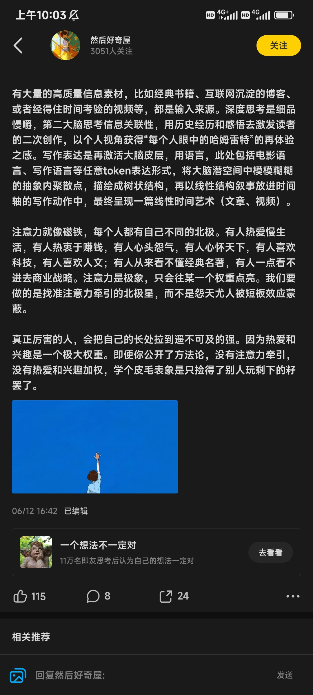
procrastination
n. 延迟
delusion
n. 错觉
Even so
虽然如此
entirely
全部地
implement
实施
judged
判断
学生＝无知者#悖论
“我发现我说不出没准备过的话。”
钟道隆#名言
Notion 未来构筑产品哲学的坚实地基：
通过设计工具和方法，可以提高个体的智力水平。
通过组合工具和方法，可以帮助个体更好地理解和处理复杂信息。
通过创建具有共识的知识系统，可以提高团队效能，并增强人类整体的智力水平。
#笔记
人生如同痴人说梦，充满喧哗与骚动，却毫无意义。#名言
何必关注那些有争议的事情。
我们听不到超低频，只能听到超低频的泛音。#声音
真诚者更善于欺诈，只不过欺诈的对象是自己。#杂谈
以全人类的智力都无法研究清楚智力是什么东西。#悖论
如果目标决定当下所做的事，那么人生就是一直在前往目标的路上，但意义往往出自于当下，也就是在前往目标的途中。
一个人去旅游，如果只是以旅游为目标来决定当下所做的事，那么他就会以最短的时间到达地点，然后以最快的速度打卡完所有景点，最后再以最短的时间回来。
#笔记
The Mid-Autumn Festival falls on the 15th day of August
falls on + 时间
正值某日（一般用于节日）
#英语
the 100th anniversary of the founding of the Communist Party of China.
中国共产党成立一百周年纪念日
#英语
To date.
迄今为止
has yet to
尚未
#英语
one being primary and optimal and the other being secondary and sub-optimal.
谁主谁次，谁优谁劣。
optimal
[ˈɒptɪməl]
primary
[ˈpraɪməri]
adj.主要的
#英语
They supplement and promote each other.
他们优势互补。
supplement
|ˈsʌplɪmənt|
v./n.补充
promote
v.促进
#英语
巨大的建筑，总是一木一石叠起来的，我们何妨做做这一木一石呢？我时常做些另碎事，就是为此。
——鲁迅
#笔记 #名言
古希腊哲学家欧布里德(Eubulides)提出的沙堆悖论(Sorites paradox)：
1粒沙子不是堆。如果1粒沙子不是堆，那么2粒沙子也不是堆；如果2粒沙子不是堆，那么3粒沙子也不是堆；以此类推，9999粒沙子也不是堆；因此，1万粒沙子还不是堆。
#悖论
幂律的意思是，你最成功的一笔投资带来的回报将超过你其他所有投资的总和。
所以即使你投资的 95% 都失败了，只要有一个足够大的成功也可以对冲其他的失败投资。#笔记
习惯：无意识行为#笔记
能做好一件事往往不是长期的努力，而是连续短时的专注。
什么是连续短时？
工作与休息不断循环的周期。
#笔记
胡适先生：怕什么真理无穷，进一寸有进一寸的欢喜。#名言
无中生有，正是因为“有”，才让人参透了“无”#笔记
在市场经济学中，价值也就是价格是由供需来决定的#笔记
受苦比解决问题来得容易，承受不幸比享受幸福来得简单。伯特·海灵格#名言
#正确的废话
即日起建立 正确的废话 一标签
意在记录那些能把现状写得清晰明了，却又缺乏解决办法的文字。
焦虑的本质：欲望与能力的距离过大（情绪脑与本能脑的急于求成、趋易避难）#笔记#正确的废话
克服方法：
真正的觉醒是一种发自内心的渴望，立足长远，保持耐心，运用认知的力量与时间做朋友。#笔记
成长的本质就是让大脑的认知变得更加清晰。#笔记
人天然追求简单、轻松、舒适、确定，这种天性支配着他们。#笔记
虚构故事就像造梦，观者分不清现实与虚拟。#笔记
人们对一件事不倾向于中立面是因为没有意识到中立面的存在#不一定 #笔记
“文学创作应该像是戴着镣铐跳舞，镣铐是格律，我们要跟着格律走，却不受其拘束，要戴着镣铐舞出自己的舞步。”——闻一多《诗的格律》#名言
一门学派被遗忘就意味着他的思想已经由一门学问蜕变成了人们的共同感觉。#笔记
过去与未来都是模糊的，只有当下是强烈且清晰的#笔记
社交媒体：展示精心设计的自我。
现实：展示真正的自我#笔记
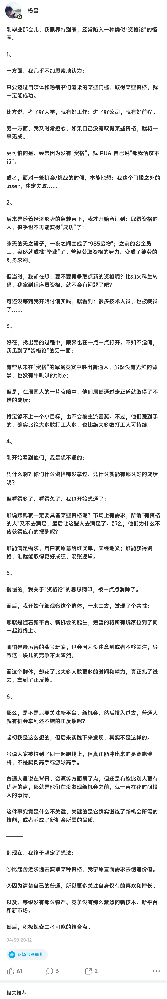
不愤不启 ，不悱不发。
《论语·述而》
#名言
在教学过程中，只有当学生经过深入思考仍然无法理解时，教师才去启发他；同样，只有当学生能够理解但表达不出来时，教师才去引导他。
渔夫躺在沙滩上晒太阳，富翁问他：“你怎么不去打渔呢？”
渔夫说：“打渔干什么？”
富翁说：“挣钱啊。”
渔夫说：“挣钱做什么？”
然后建房子娶老婆生孩子这么绕了一大圈，富翁说：“这样之后你就可以悠闲地躺着晒太阳了。”
渔夫说 ：“我现在不正晒着呢吗？”
#一些小故事#笔记
当人在未知领域做判断时就会依赖直觉，而直觉直接来源于阅历。所以说
何为艺术？有艺术感？把简单的东西复杂地表达出来。这种复杂不是混乱，而是丰富。#杂谈 #不一定
只有在乱世中、权力被重新洗牌时，普通人才能崭露头角，才有阶层跃升的希望。#笔记 #不一定
小心检视，你的成功是否只是以害怕被他人讨厌而换来的。若是如此，那你的成功不幸只代表“你为他人活了一辈子”。
——陈文茜#名言
中庸强调适度合理竞争，反对过分竞争
中庸又称中用，庸古同用。意为待人接物保持中正平和，因时制宜、因物制宜、因事制宜、因地制宜，儒家的理论根源源于人性。出自《论语·雍也》：“中庸之为德也，其至矣乎。”何晏集解：“庸，常也，中和可常行之道。” 也就说是中庸其实是因时因地制宜，实事求是，强调动态的平衡状态，而非一成不变的中间路线；#笔记
人从根本上只面对两个问题：一是生存，得活下来；二是得回答生命价值的问题，让心有个安住。#笔记
你不是没看出来，是根本就没看，你心思不在这上面。
#笔记
自觉与觉他#笔记
#笔记
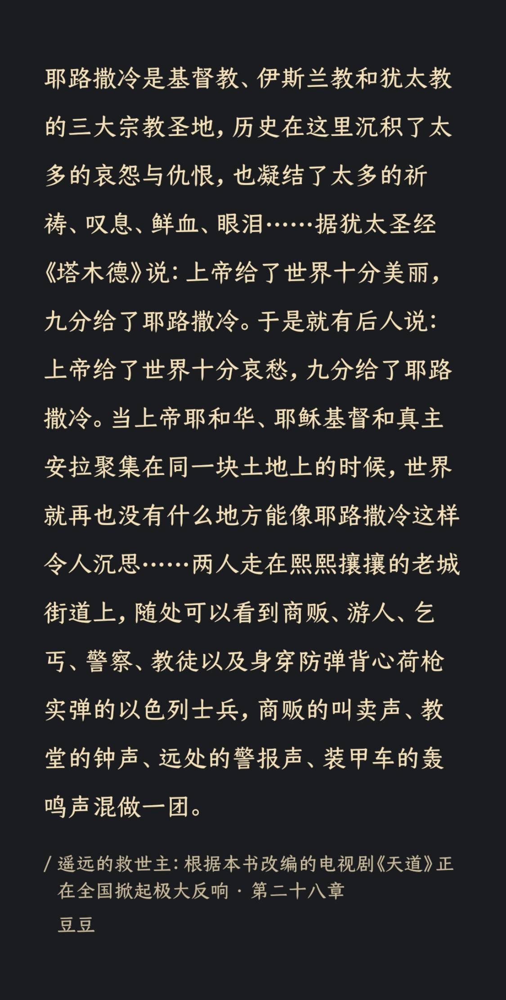
我们都是非理性的动物。所以，我们经常会做出不符合自身最大利益的决定。
#笔记
巴什拉在《空间的诗学》里写道：“ 在他漂亮家宅里寻找一个鸟巢来安置他的小小身躯。他最终把自己关在一间卧室里，只有那样他才能够呼吸到他所必需的熟透的空气。”
#笔记
所有的阅读，都是等待后的相遇。#笔记
低头任意抬头难
低头的成本比抬头低
#杂谈
实用的态度
事物本来都是很混乱的，人为便利实用起见，将事物分门别类。
#笔记
实用的态度，科学的态度，美的态度
#笔记
审美，是一个人心境的表现
#笔记
沉浸式体验获取知识的时间与物质成本高。
#笔记
上帝负责制造新闻，媒体负责采集新闻。
#笔记
#笔记
余闲
给自己一个短而频繁的截止日期
意志会动摇，但也可以加固。
#笔记
#意象
蝎火
来源：银河铁道之夜
#笔记
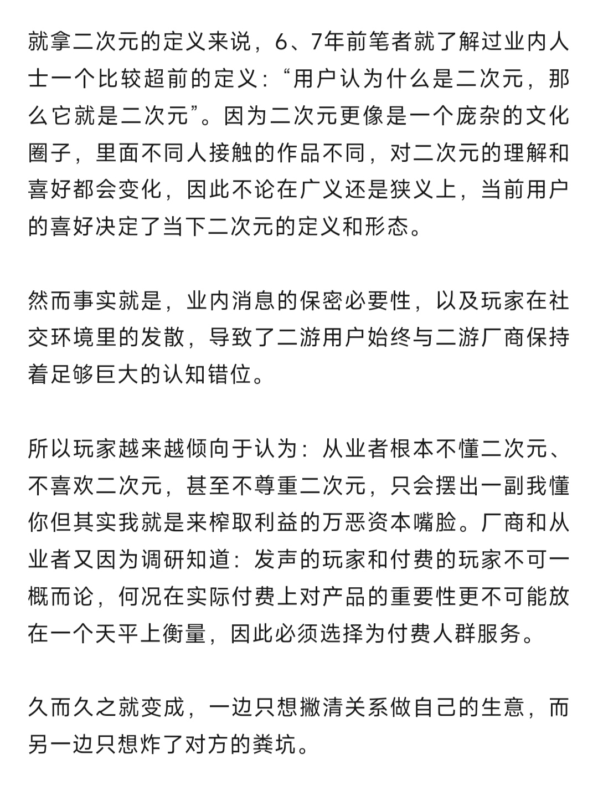
#笔记
有些事儿3A大作办不到，但独游可以！
Mario和Doro的开发经验：
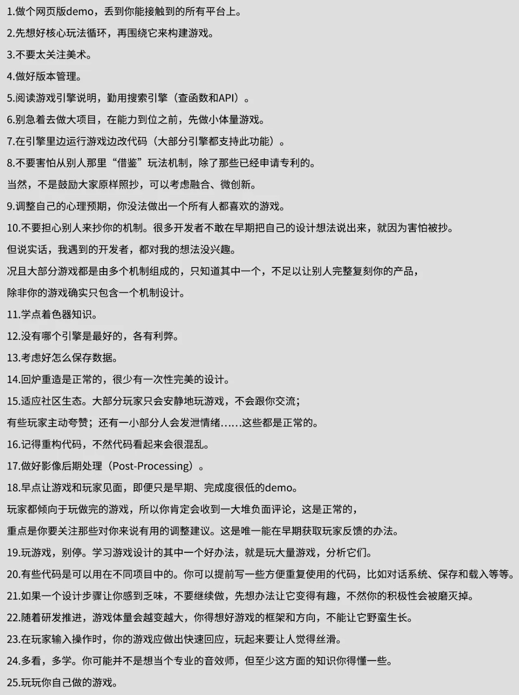
同是一件事物，看法有多种，所看出来的现象也就有多种。
#笔记
艺术的活动是“无所为而为”的。
朱光潜
#名言 #笔记
#笔记
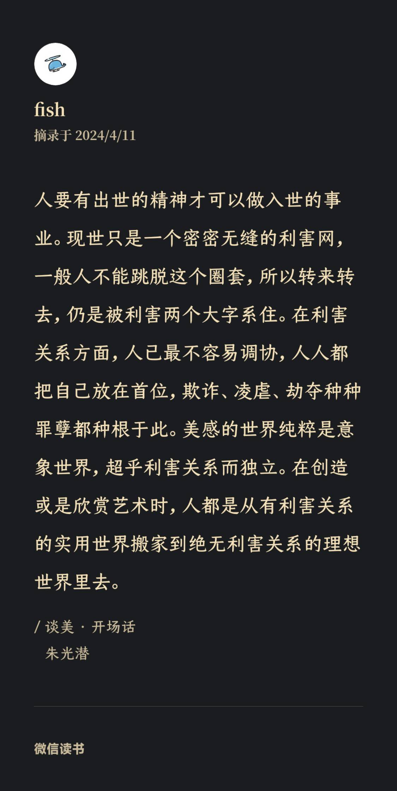
朱光潜先生认为：情感比理智重要，因为情感要求人心净化，先要求人生美化。较高尚、较纯洁
#杂谈
艺术是情趣的表现，而情趣的根源就在人生。反之，离开艺术也便无所谓人生；因为凡是创造和欣赏都是艺术的活动。
#笔记
不啻 ＝ 无异于
#语言替换
悠悠的过去只是一片漆黑的天空，我们所以还能认识出来这漆黑的天空者，全赖思想家和艺术家所散布的几点星光。朋友，让我们珍重这几点星光！让我们也努力散布几点星光去照耀和那过去一般漆黑的未来。
朱光潜
#名言 #笔记 #
美感？快感？
#笔记 #今日一问
#笔记#今日一问
什么是艺术？什么是哲学？什么是认识观点？
学习＝记忆，遗忘＝白学，所以使用是维持学习的方法。
原始材料需要记忆
方法需要记忆
技法需要记忆（肌肉记忆
#思考
译，从来都不可能是机械的──否则 Google 翻译早就该替代人工翻译了。翻译，实际上大部分工作内容是 “再创作”。
#笔记
很多人是 “不惜一切代价” 避免出错的。然而，要知道知识的习得过程离不开试错，没有试错，就不可能有全面而真实的进步。所以，要知道犯错是正常的，甚至是不可或缺的。做事的时候，出错是必然的，如果正在做事却一点错都没有，那不是做事──那是在做梦。
#笔记
罗伯特•莫顿教授发现了这个现象，为这类现象取了个名字叫做 “自证预言”（Self-fulfilling prophecy）。
当人们相信某件事情会发生（事实上那件事情原本并不见得一定会发生），那么此事最终真的会发生。
#笔记
区域论（Localizationism）认为大脑就好像是一台复杂的机器，而这个机器的每个部件都有其特定的功能；进而，每个特定的功能都是受硬件限制的（Hardwired）。而区域论的言外之意则是，一旦大脑的某个区域损坏，那么那个区域所管辖的功能就无法恢复了。而临床观察也好像确实能够印证这个结论：比如，中风4患者的瘫痪肢体看起来是无论如何都无法恢复的。
不过这一理论上错误的
Taub 教授 CI 疗法的成功首先证明区域论是错误的（至少不是完全正确的）—— 大脑可以重新组织自己；其次证明大脑自始至终都是可塑的，甚至可以重组 —— 即，用一个新的脑图完成原本由受损的脑图完成的功能；最后证明的也是最重要的：脑图之间存在着相互竞争 —— 所以，为了治好受损的右臂，要先把未受损的左臂给限制住。如果不把未受损的左臂给限制住的话，那么左臂的脑图将永远处于优势，进而，使得大脑对已经受损的右臂产生 “习得之弃用”（Learned Nonuse）8。
#笔记
约翰霍普金斯大学的两位研究人员 David Hubel 和 Torsten Wiesel 于 1959 年年底开始做的一项实验在其后的许多年里，影响了全球不计其数的第二语言习得者 —— 只不过，这影响主要是负面的 —— 尽管该实验本身的目的与外语学习看起来没有什么直接联系：研究动物视觉系统的早期发展 。
他们将出生几个月的猫或者猴的一只眼睛用手术缝合；经过一段时间之后再重新打开。研究表明，即便后来重新打开缝合的眼睑，这些动物的眼睛也不能再获得视觉功能。在这段时间内关闭一只眼睛对于动物脑中视觉区域的结构有明显的影响。但是，对于成年猫进行同样时间或更长时间的视觉剥夺既不会影响它们的视觉能力，也不会影响它们的大脑结构。只有年幼的动物在它们发展的“关键期”（Critical Period）才会因此剥夺视觉敏感。
youtube上有这个实验的记录片：
http://www.youtube.com/watch?v=IOHayh06LJ4
http://www.youtube.com/watch?v=KE952yueVLA
这项研究及其成果最终使这两个人于 1981 年获得了诺贝尔医学奖，“因为这项研究对理解视觉系统如何处理信息有着巨大贡献”。但是，人们好像对这项研究中提出的 “关键期” 概念更感兴趣。科学家们很快就发现大脑的其它部分也都需要获得刺激才能够发展，并且好像它们都符合关键期理论。而根据关键期理论，只有在关键期内，大脑才是 “可塑的”（Plastic），这时大脑所接受到的外部刺激甚至会改变大脑的结构；而关键期过后，大脑就不再是可塑的了。很快，“关键期” 这个概念延伸到了各个科学领域。
二三十年之后，终于有科学家证明：
这个正在美国UAB康复中心治疗的小女孩受伤的是左臂还是右臂？
其实她的左臂没有受伤，而之所以把左臂固定起来就是因为那是一条没有受伤的手臂，而右臂才是受伤、需要通过训练恢复的 …… 咦？这是怎么回事儿？可是从生理上来看，大脑受损的部分是没办法恢复的，她又怎么能通过训练来让已经受伤的右臂恢复正常呢？
大脑的神奇之处在于它可以利用其它未受损的部分重新习得受损部分的功能（学术上叫做 “remap”、“reroute”、或者 “rewire”）。之所以要把行动自如的左臂绑起来，是因为如果不这么做的话，面对任何需求，大脑中负责控制左臂的部分（或称为 “左臂脑图”）都会 “优先启动”；因为这部分是未受损的，而原本控制右臂的部分已经受损了。换言之，这时，大脑中尚不存在一个能够控制右臂的部分。而把左臂固定住之后，尽管负责控制左臂的大脑部分依然 “优先启动”，但实际上却无法自如操纵左臂。而在这种情况下，就可以通过让大脑的其他部分慢慢专注于右臂，进而习得控制右臂的方法 —— 即，可以通过这样的训练，慢慢使大脑未受损的某个区域 “习得” 原本只有那个已经受损的区域所负责的功能。没有多久，这个女孩子的右臂就恢复了，活动起来与原来没什么两样。可是她的大脑不再是原来的样子了，尽管某一部分受损且不可恢复，但她大脑的另外一个区域已经被开发，能够别无二致地完成受损区域曾经可以完成的功能。
#笔记
“我也行” 这三个字是绝大多数普通人最现实最有效的动力。
#笔记
诺兰在电影里向观众交代：一个想法必须足够简单才可能被植入；越是简单的想法，在植入之后越是根深蒂固；因为拥有这个想法的人无法分辨这个想法是自己的还是被植入的
#笔记
真正的放松与休息不是啥也不干，而是做自己喜欢做的事情。
#思考
有些东西，练习其实并不是为了目的而是过程。
例如：绘画，大量的练习只是为了绘画的过程，而不是画作的结果。
#思考
当有人笑话耶稣是傻子的时候，其实谁都不傻，仅仅是两种价值观不兼容。
#笔记
对于某些人，他们从来不跟别人提的东西就是好东西；
而又某些人，他们把别人常提到的东西就当成好东西。
#思考
责骂者，责即为诊，诊而不医，无异于断为绝症，非仁人志士所为。
#笔记
你感受不到真诚，那就是不真诚。你感受不到快乐，那这个人就不合适。
永远不去想，别人到底是怎么想的。那个答案只有对方知道。
#笔记
一、第一性原理：从事物最本质出发思考问题
二、金字塔原理：学习思考表达的底层逻辑
三、黄金圈法则：探索事物背后的真正意义
四、冰山理论：透过现象挖掘问题的根源
五、奥卡姆剃刀：避免人生内耗的減法思维
六、升维思考：让你更接近真相的背后逻辑
七、六顶思考帽：多维度平行思维重要工具
八、破圈模型：人生实现自我突破的关键
九、头脑风暴：激发大脑潜能的超强工具
十、逻辑推理：快速做出正确决定的基础
#笔记
不要拿你的过程跟别人的结果比，嫉妒与焦虑也往往在这个时候诞生。
#笔记 #思考
写文章不是为了说服别人，只是表达一种观点。
#笔记
一个人的认知决定了他的竞争力。
张一鸣
#笔记 #名言
没有白费的功夫，只有未到的时机。
#笔记 #小宇宙
最杰出的人是那些在各种有目的的练习中花了最多时间的人。
选对信息获取渠道，可以省下很多时间。
靠近一手信息的平台信息损耗及失真小
#笔记
我们从信息里获取知识，知识又能帮助我们获取信息。
#笔记
文明对于不能以人字来界定的人无能为。
着相：执迷于表像而偏离本质。
#佛教术语 #笔记 #阅读
对于一个没有技术背景的小白，虽说迟早会学一点技术上的东西，但千万不要一上来就学技术。
更高级的哲人独处着，这并不是因为他想孤独，而是因为在他周围找不到他的同类。
尼采
#笔记 #名言
非同小可的事，非当事人不作评价。
#阅读 #笔记
任何人都存在“专”与“博”的矛盾。
#思考 #笔记
还没立法，怎么违法？
#笔记
对待事件的态度取决于经历
#杂谈
「增援未来的自己」
#名言
努力进步，不求完美。
——田径运动员金·科林斯（Kim Collins）
#名言
心理学家 Kaufman 的一项调查显示，70%的人认为淋浴时思维最活跃、创意最多。
#思考
“透视社会依次有三个层面:技术、制度和文化。小到一个人，大到一个国家一个民族，任何一种命运归根到底都是那种文化属性的产物。强势文化造就强者，弱势文化造就弱者，这是规律，也可以理解为天道，不以人的意志为转移。强势文化就是遵循事物规律的文化，弱势文化就是依赖强者的道德期望破格获取的文化，也是期望救主的文化。强势文化在武学上被称为“秘笈”，而弱势文化由于易学、易懂、易用，成了流行品种。”
#阅读 #笔记
死 vs. 寿终正寝
一起 vs. 一丘之貉
#语言替换
克里斯汀·尼斯纯（Christine Nystrom）技术的“无形的形而上学”。
#阅读 #笔记
进化论与电报
达尔文与摩尔斯
没有进化论，人类照样可以生存。可是，每个人都必须面对电子传播的局面。
达尔文为我们提供了体现在语言上的思想。他的思想明晰、可论证、可驳斥。
莫尔斯为我们提供的是体现在技术上的思想，也就是说，它们是隐藏的、看不见的，因此从未被论证过。从某种意义上说，莫尔斯的思想是不可辩驳的，因为没人知道电子传播隐含着什么样的思想。
于是我们只能假设技术是中性的。
#阅读 #笔记
当一个概念诞生的符号环境开始瓦解时，这一概念就会不可避免地消亡。
#阅读 #杂谈
移情
#阅读
“帮助别人的最好方式就是活出别人的范例。”
#小宇宙 #每日一言
可以这样问问题进行批判性思维：
然后再进行批驳。
#阅读
“成年人的世界不止五险一金。”
儿童的个性不应被扼杀，因为童年已经消逝。
#小宇宙 #每日一言 #杂谈
关关难过关关过，前路漫漫皆灿烂。
#即刻 #每日一言
“我们本应被鼓励去发现或创造自己的真相，但事实上我们被无数强大的指令狂轰滥炸。”
这是大多数体制内教育的学生的状况。
#小宇宙 #杂谈 #每日一言
ai提示词 ＝ 新编程语言
#即刻